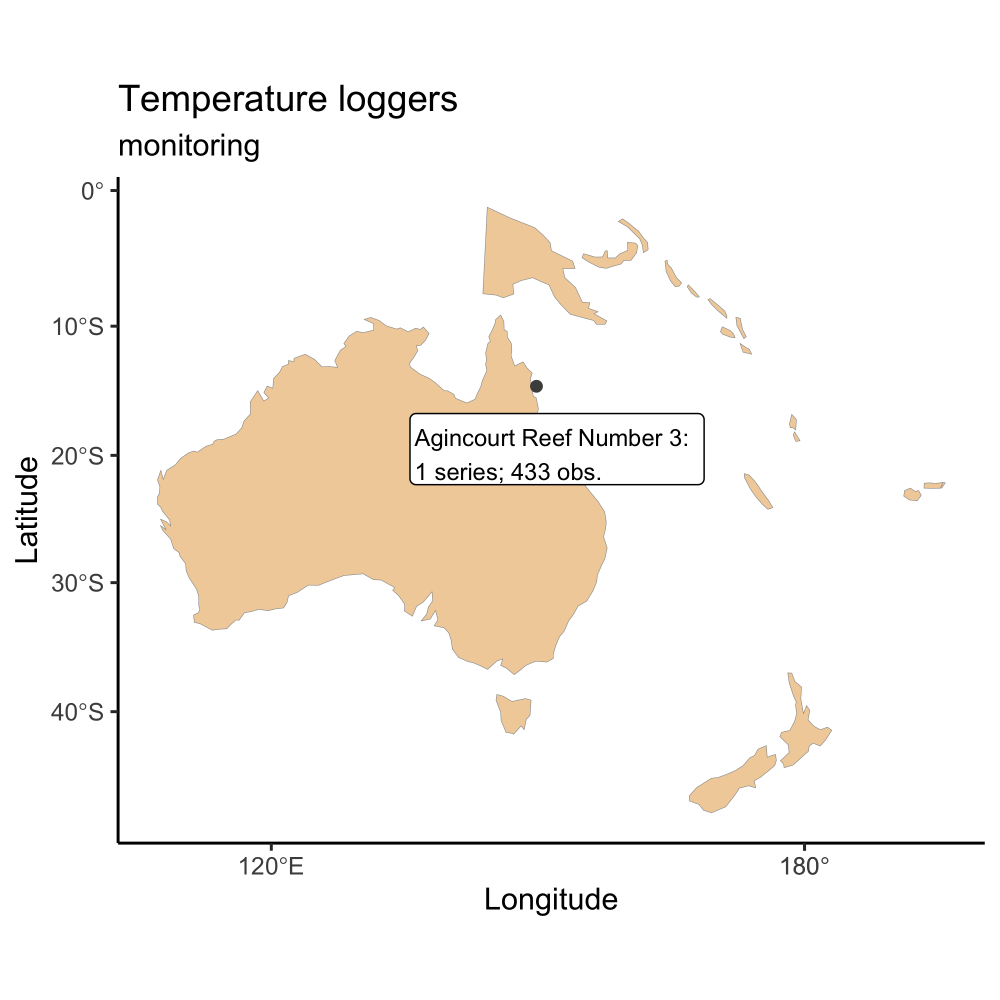

Please check our intro vignette first to implement the installation requirements, and to learn the general approach to navigating the different datasets. This vignette assumes you have obtained an AIMS Data Platform API Key.
As per the installation instructions, we strongly suggest that you hide your API Key permanently in your .Renviron file and set the object my_api_key to NULL in the chunk below. You can read more about why that is important here.
# set my_api_key to NULL after successfully placing it in .Renviron
my_api_key <- NULLLet’s start by loading the packages needed for this vignette:
Discovering the dataset
The Sea Water Temperature Loggers dataset is less extensive than the AIMS Weather Station dataset because it comprises one single “parameter”—water temperature—that is measured at multiple sites. Not all sites have the same temporal coverage; some loggers are still actively collecting data, others have been discontinued. So the key distinctive variables in this instance are the “site”, and the “series”. A “series” represents a continuing time-series, i.e. a collection of deployments measuring the same parameter at the same subsite. Because there is only one parameter (water temperature), subsite and series are synonymous in the Sea Water Temperature Loggers dataset. So a series will comprise a continuing time-series at a specific site and depth.
Essentially, for the user who has limited knowledge about where the data are, and of what they are consisted, they would need to do some prior exploration to learn more about what can be downloaded. Suppose the goal is to download all time-series from a particular site. The general procedure would be:
- Examine documentation and establish query filters
- Perform data download using
aims_data - Create an exploratory time-series chart
For all datasets, a list of available filters can be retrieved with the function aims_expose_attributes. Knowing the filters is important because some time series are quite extensive, with parameters being measured at very high frequency (e.g. every 5 minutes), so downloading the dataset for an entire year or more my take quite some time (it’s possible though if that is the true goal of the user).
aims_expose_attributes("temp_loggers")
#> $summary
#> [1] "summary-by-series" "summary-by-deployment"
#>
#> $filters
#> [1] "site" "subsite" "series" "series_id" "parameter" "size" "min_lat" "max_lat" "min_lon" "max_lon" "from_date" "thru_date" "version" "cursor"In the Sea Water Temperature Loggers dataset, as demonstrated in our intro vignette, we have a convenience summary method which facilitates learning more about what data is available. We can download the summary information for all sites using the main function called aims_data:
sdata <- aims_data("temp_loggers", api_key = my_api_key,
summary = "summary-by-series")
head(sdata)
#> site_id site subsite_id subsite series_id series parameter parameter_id time_coverage_start time_coverage_end lat lon depth uncal_obs cal_obs qc_obs
#> 1 1 Agincourt Reef Number 3 2687 AG3FL1 2687 AG3FL1 Water Temperature 1 1996-03-30 2008-12-11 -15.9903 145.8212 0 23130 110480 110480
#> 2 1 Agincourt Reef Number 3 14276 AG3SL1old 14276 AG3SL1old Water Temperature 1 1996-03-30 2011-07-21 -15.9905 145.8213 5 114450 216794 216794
#> 3 3 Cleveland Bay 3007 CLEVAWSSL1 3007 CLEVAWSSL1 Water Temperature 1 2004-05-13 2008-05-03 -19.1557 146.8813 7 11951 53231 53231
#> 4 3 Cleveland Bay 3069 CLEVAWSFL1 3069 CLEVAWSFL1 Water Temperature 1 2005-09-15 2005-12-22 -19.1557 146.8813 1 0 4656 4656
#> 5 4 Davies Reef 2629 DAVFL1 2629 DAVFL1 Water Temperature 1 1997-08-26 2019-06-10 -18.8065 147.6688 1 437544 566585 566585
#> 6 4 Davies Reef 2630 DAVSL1 2630 DAVSL1 Water Temperature 1 1996-05-02 2017-05-07 -18.8060 147.6686 8 369317 495663 495608The summary argument here is key. It should only be flagged when the user wants an overview of the available data. One can visualise summary-by-series or summary-by-deployment.
ddata <- aims_data("temp_loggers", api_key = my_api_key,
summary = "summary-by-deployment")
head(ddata)
#> deployment_id serial_num site_id site subsite_id subsite series_id series parameter parameter_id time_coverage_start time_coverage_end lat lon depth uncal_obs cal_obs qc_obs
#> 1 39691 SU-11424 4 Davies Reef 2630 DAVSL1 2630 DAVSL1 Water Temperature 1 2012-11-10 2013-05-21 -18.8060 147.6686 8.3 27504 27504 27504
#> 2 3319 SST-905242 865 Hayman Island 2644 HAYSL1 2644 HAYSL1 Water Temperature 1 1999-06-03 2000-05-15 -20.0572 148.8997 9.0 0 16590 16590
#> 3 471410 10048402 3181 Enderby Is 14056 ENDERBY 14056 ENDERBY Water Temperature 1 2015-05-24 2016-02-06 -20.5689 116.5550 NA 12292 12292 12292
#> 4 15923 SU-10088 986 Pine Island 3080 PINESL1 3080 PINESL1 Water Temperature 1 2011-09-28 2012-02-13 -20.3780 148.8884 6.6 19728 19728 19728
#> 5 479464 355088 896 Turner Cay 2664 TURSL1 2664 TURSL1 Water Temperature 1 2014-08-27 2017-01-25 -21.7031 152.5605 NA 125856 125856 125856
#> 6 450497 SU-11021 743 Rib Reef 13478 RIBCH2 13478 RIBCH2 Water Temperature 1 2014-10-04 2015-04-15 -18.4901 146.8709 3.4 27648 27648 27648Notice that sdata contains a lot of information, most of which is related to site / series / parameter ID. Each row corresponds to a unique series. The columns time_coverage_start and time_coverage_end are probably one of the most valuable pieces of information. They provide the user with the window of data collection for a particular series, which is probably crucial to decide whether that particular series is of relevance to the specific question in hand.
The benefits to choosing a data series (or the numeric equivalent, series_id) is that it comes from one location and parameter type (here only water temperature), making the data easy to plot. If we did not choose a data series from the Sea Water Temperature Loggers dataset, we would have to specify additional arguments to ensure the data is downloaded as expected.
Our values and filters might look like the following:
| Variable | Value | Description |
|---|---|---|
| series_id | 2687 | Found here, Agincourt Reef Number 3 |
| from_date | “2005-01-01” | We want to start charting on 1/1/2005 |
| thru_date | “2005-01-10” | We are plotting 10 days of data |
Query and Plot Dataset
After deciding on query parameters, we plug the series id into a aims_data function:
agincourt <- aims_data("temp_loggers", api_key = my_api_key,
filters = list(series_id = 2687,
from_date = "2005-01-01",
thru_date = "2005-01-10"))We can check that the query filters worked:
range(agincourt$time)
#> [1] "2005-01-01 UTC" "2005-01-10 UTC"We can then visualise where in Australia that data is placed:
plot(agincourt, ptype = "map")
We can also visually compare multiple series at once. For instance, let’s compare the air temperature data from Davies Reef and Bramble Cay for the same period of time:
target_series <- c("Agincourt" = 2687, "Cleveland Bay" = 3007)
aims_data_per_series <- function(series_number, my_api_key, ...) {
aims_data("temp_loggers", api_key = my_api_key,
filters = list(series_id = series_number, ...))
}
results <- purrr::map(target_series, aims_data_per_series,
my_api_key = my_api_key,
from_date = "2005-01-01",
thru_date = "2005-01-10")
sst_data <- purrr::map_dfr(results, rbind)
plot(sst_data, ptype = "time_series")
One could also download data for a particular time of day throughout the year, e.g. for Davies Reef at 1 m of depth (series_id is 2629):
days <- seq(as.Date("2005-01-01"), as.Date("2005-12-31"), by = "month")
out <- numeric(length = length(days))
for (i in seq_along(days)) {
hour_in <- paste0(days[i], "T06:00:00")
hour_out <- paste0(days[i], "T12:00:00")
df <- aims_data("temp_loggers", api_key = my_api_key,
filters = list(series_id = 2629, from_date = hour_in,
thru_date = hour_out))
out[i] <- mean(df$qc_val)
}
ggplot(data = data.frame(date = days, temps = out)) +
geom_line(mapping = aes(x = date, y = temps)) +
labs(x = "Date",
y = "Water temperature (˚C)",
title = "Davies Reef @ 1 m (2005)",
subtitle = "mean 6 A.M. – 12 P.M.") +
theme_bw() +
theme(axis.title.x = element_text(size = 12),
axis.title.y = element_text(size = 12),
legend.position = "bottom")
Bibliography
purrr::map_chr(results, aims_citation) %>%
unlist %>%
unname
#> [1] "Australian Institute of Marine Science (AIMS). 2017, AIMS Sea Temperature Observing System (AIMS Temperature Logger Program), Time period:2005-01-01 to 2005-01-10. https://doi.org/10.25845/5b4eb0f9bb848, accessed 18 Mar 2021."
#> [2] "Australian Institute of Marine Science (AIMS). 2017, AIMS Sea Temperature Observing System (AIMS Temperature Logger Program), Time period:2005-01-01 to 2005-01-10. https://doi.org/10.25845/5b4eb0f9bb848, accessed 18 Mar 2021."